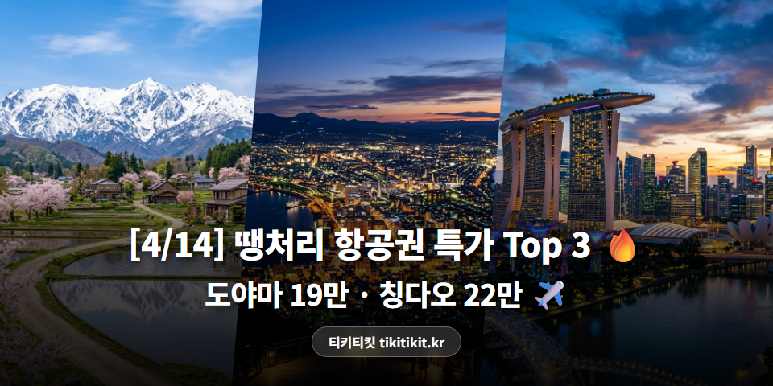
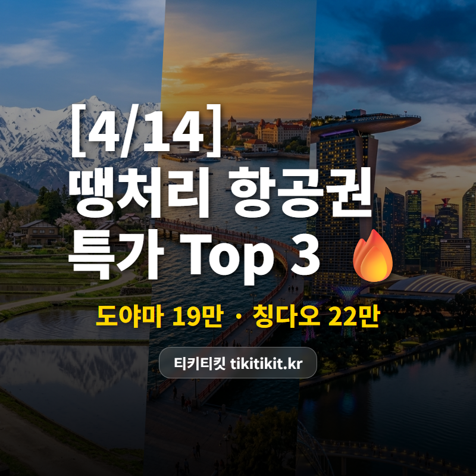
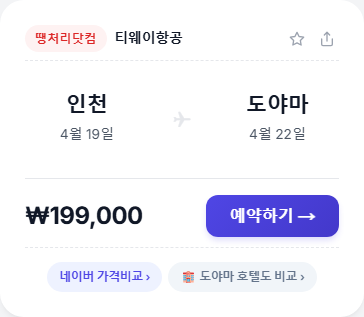
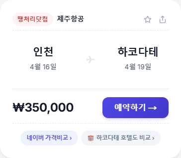
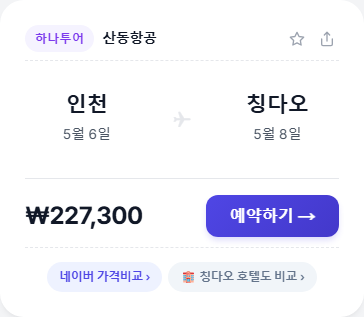

[4/14] 땡처리 항공권 특가 TOP 3 | 도야마 19만원, 하코다테 35만원 ✈️

일본, 중국, 동남아 동시 특가! 🌏
도야마 19만원대부터
괜찮은 가격들이 올라왔어요.
🏆 4/14 추천 특가 TOP3
🥇 1위
인천 ↔ 도야마 (일본)
티웨이항공 · 4/19(토)~4/22(화) · 3박 4일
199,000원

다테야마 알펜루트의 설벽, 지금이 시즌! 🏔️
🥈 2위
청주 ↔ 타이베이
이스타항공 · 4/20(월)~4/24(금) · 4박 5일
219,200원

야시장 투어에 딘타이펑까지 🧆
🥉 3위
인천 ↔ 하코다테 (일본)
제주항공 · 4/16(수)~4/19(토) · 3박 4일
350,000원

세계 3대 야경 + 아침시장 해산물 덮밥 🦑
※ 유류할증료/텍스 포함 왕복 총액 기준
※ 좌석이 빠지면 가격이 바뀌거나 사라질 수 있어요.
💡 에디터 픽 : 3위 인천-하코다테
인천-하코다테 왕복 350,000원!
제주항공 직항 3시간,
3박 4일이면 홋카이도 남쪽을 돌아볼 수 있어요.
하코다테산 야경은 나폴리, 홍콩과 함께
세계 3대 야경으로 유명하죠 🌃
아침시장에서 성게·연어알 덮밥도 필수!
왕복 35만원이면
홋카이도 입문으로 딱이에요!
📌 인천 출발은 뭐가 있을까?
이번 인천 출발 추천 라인업!

✈️ 칭다오 227,300원 (산동항공)
5/6~5/8 · 2박 3일 맥주의 도시로! 🍺

✈️ 마나도 199,000원 (이스타항공)
4/19~4/23 · 4박 5일 알찬 일정 가능!

✈️ 싱가포르 279,000원 (스쿠트항공)
4/22~4/26 · 4박 5일 마리나베이 야경! 🦀
✨ 이번 주 항공권 꿀팁
🍺 칭다오 맥주박물관은 입장료에 생맥주 시음이 포함돼요!
💰 초특가 항공권은 날짜 변경이 어려울 수 있으니, 일정 확정 후 예약하세요.
💡 네이버·구글에서 같은 노선 검색해보면 가격 차이가 꽤 나요. 비교는 필수!
좋은 항공권은 금방 사라져요 💨
관심 있는 노선이 있다면
가격 비교해보는 걸 추천해요!
#땡처리항공권 #특가항공권 #항공권싸게사는법 #항공권최저가 #해외여행꿀팁 #티키티킷 #4월항공권 #4월해외여행 #도야마여행 #하코다테여행 #타이베이여행 #칭다오여행 #싱가포르여행